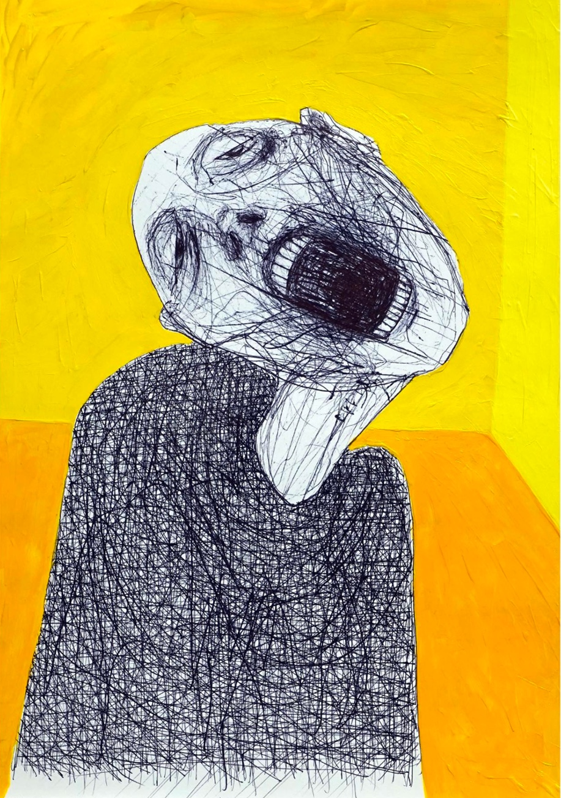

Karan Kapoor is the Co-Founder & Editor-in-Chief of ONLY POEMS and Strange Pilgrims. His poems have appeared in Best New Poets, AGNI, Shenandoah, Colorado Review, and elsewhere, fiction in JOYLAND and the other side of hope, and translations in The Offing and The Los Angeles Review. He lives in Toronto, Canada with his wife & daughter.
Debut poetry collection
Thirst
Forthcoming from Alice James Books in April 2028
Though borrowing heavily from personal experience, this collection is constructed with dream and distance. Rooted in the specific time and place of modern Northern India, the themes I explore radiate outwards, and hopefully, this work is as much a mirror as it is a memoir. I am attempting to forge a space for myself, an Indian poet of a fragmented, autocratic past directly marred by the colonial era, in the American poetry scene.
This collection is composed of over 50 poems profiling my father through hybrid forms (such as the interview, questionnaire, visual fragments, prose poems) and traditional forms (villanelle, ghazal, free verse). The poems attempt an obsessive portrait of another that eventually becomes a self-portrait.

A portion of this collection was a finalist for Diode, Iron Horse Literary Review, and Tusculum Review Chapbook Prizes, as well as shortlisted for the Rattle Chapbook prize. The full-length collection was also a finalist for the Charles B. Wheeler Poetry Prize (The Journal), the Felix Pollack Poetry Prize (University of Wisconsin-Madison Press) and the Barrow Street Book Prize. Poems from this collection have appeared in Best New Poets, AGNI, Rattle, Plume, TAB, Poetry Ireland Review, New Welsh Review, Poetry Online, Frontier Poetry, The Margins, Southword and elsewhere.
Praise
“I like Karan's poems. They have a mix of imagination and substance that's very appealing to me...“the sky must hate us/ as it sees everything we do.” I'd like to have written that...I’m especially drawn to the combination of directness and privacy in his poems, and the creation of a world within a world."
Bob Hicok
“These poems are, no bullshit, the real deal. You are the real deal, Karan. You are a real poet.”
Kaveh Akbar
“This devastating poem explores gendered responses to grief, and vividly evokes the aftermath of a process of cremation in India, seen here from the inside, as it were, from a speaker both embedded in his culture and in some ways estranged from it.”
Mark Doty